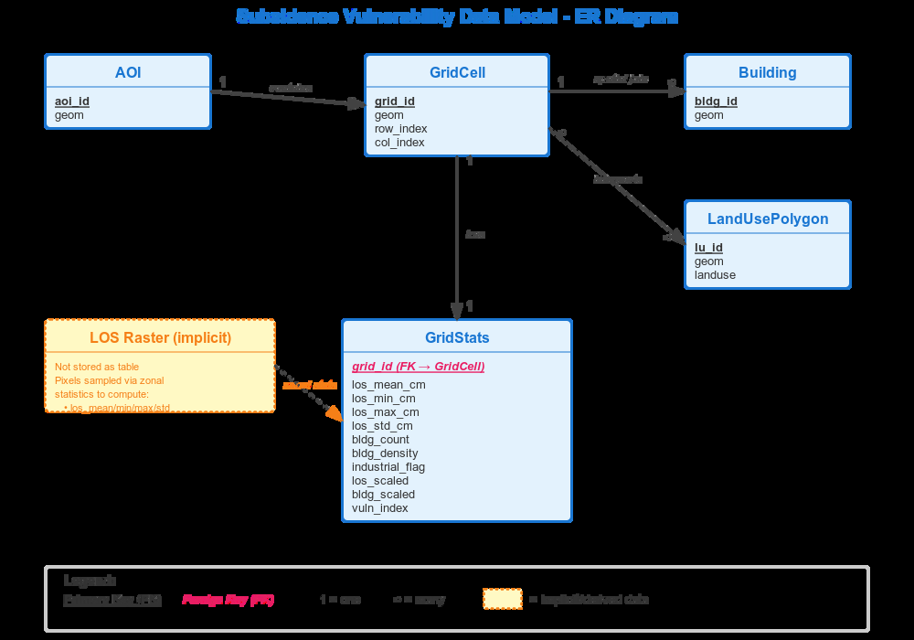
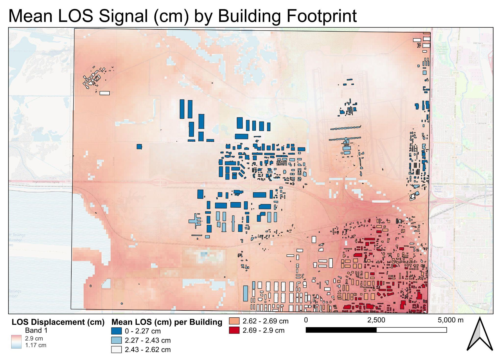
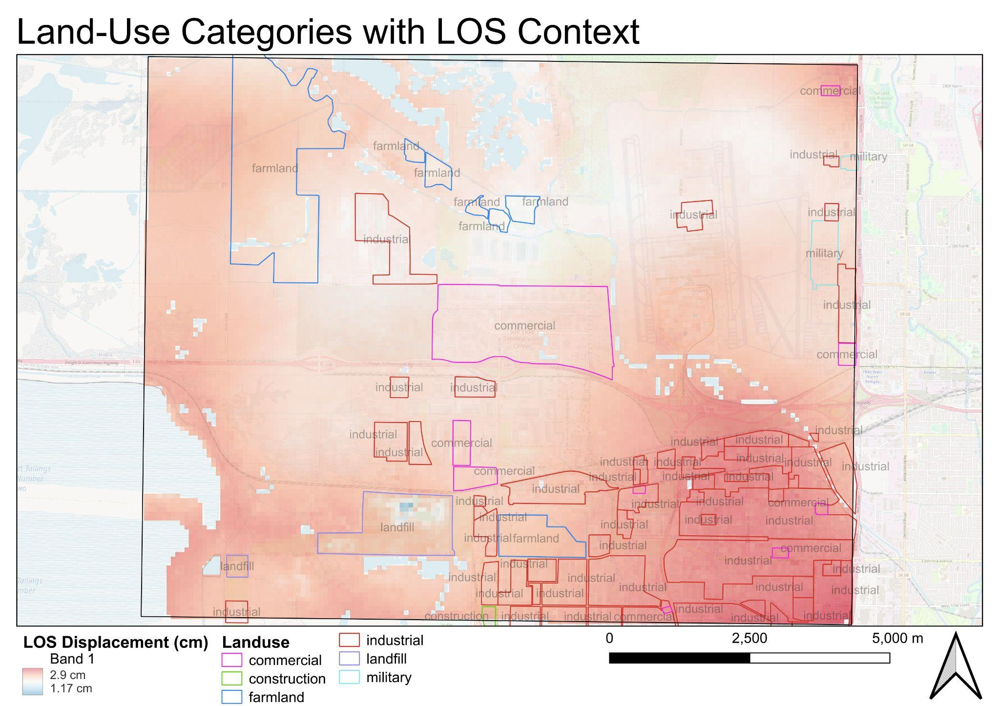
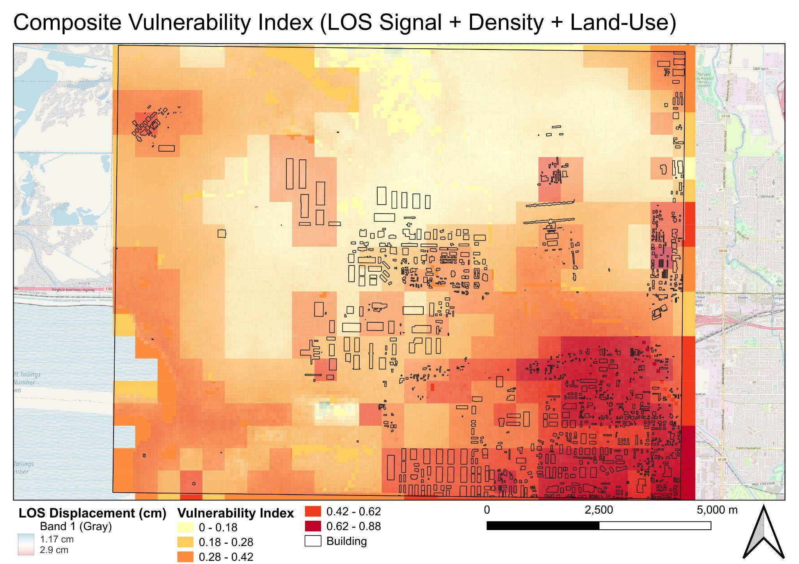

InSAR Signal & Infrastructure Exposure Around Salt Lake City Airport
Integrating Sentinel-1 radar measurements, building footprints, and land-use data to map patterns of infrastructure exposure in the airport's industrial corridor.
Read full research report ↗Research question
Can short-term line-of-sight (LOS) radar signal patterns around Salt Lake City International Airport be combined with land-use and infrastructure data to identify areas of elevated exposure?
Study data
Radar LOS and coherence rasters were processed through ASF HyP3 and combined with OpenStreetMap building footprints and land-use polygons. All layers were integrated in UTM Zone 12N (EPSG:32612).
Methods & workflow
- Prepare SAR rasters. Filter coherence below 0.3, convert LOS from meters to centimeters, remove invalid pixels, and align layers.
- Summarize by building. Calculate mean, minimum, maximum, and standard deviation of LOS within footprints.
- Aggregate to a grid. Use 500 m cells to summarize LOS, building density, and dominant land use.
- Normalize inputs. Scale LOS, building density, and weighted land use from 0 to 1.
- Compute composite index. Average the three normalized components: V = (LOS + Density + Land Use) / 3.

Results & maps
Building-level LOS summaries
Building footprints in the southeast industrial corridor generally overlapped stronger LOS signal, often above 2.6 cm. Western and northwestern areas exhibited lower values. These are spatial radar-signal differences, not measured structural movement.

Land-use context
Industrial areas were concentrated in stronger-signal zones, while farmland and open land to the north generally corresponded with weaker signal. Commercial parcels near I-80 showed mixed values.

Composite vulnerability index
The index combined normalized LOS signal, building density, and weighted land-use sensitivity. Its highest values, reaching approximately 0.88, appeared in the southeastern industrial corridor. The index identifies co-occurrence of exposure indicators, not physical deformation risk.

Discussion & limitations
The principal contribution is the spatial integration workflow: combining heterogeneous radar and vector data, applying footprint-level zonal statistics, and using grid aggregation to reveal patterns that are difficult to interpret in a single raster.
A single short-baseline interferogram cannot establish persistent deformation. Atmospheric effects dominate this LOS field, and the land-use weights reflect analytical assumptions rather than validated infrastructure damage probabilities. Additional interferograms and independent observations would be needed for deformation assessment.
Skills demonstrated
This case study demonstrates applied GIS methods, data management, analytical workflows, cartographic communication, and evaluation of uncertainty within an MSGIS portfolio.
← Back to all projects